← Back to BIM + Digital
Vertical Delivery Intelligence
Desert Pearl Residences
Make vertical complexity visible before the site feels it.
Tower cycles, podium transfers, vertical risers, façade packages, amenity decks and apartment typologies are connected through model, time and cost so a complex high-rise reads as one controlled delivery story.
The BIM Story
High-rise repetition becomes an advantage when sequence, systems and cost are structured early.
The BIM journey combines high-rise coordination with floor-cycle planning, MEP riser windows, façade closure logic, amenity sequencing, unit-typology costing, change visibility and procurement forecasting.
High-Rise FederationFloor-Cycle 4DMEP RisersFaçade Packages5D by ZoneCashflow + Procurement
Curated Digital Portfolio
Desert Pearl Residences
A cinematic sequence of coordinated models, digital construction thinking and project-specific BIM intelligence.
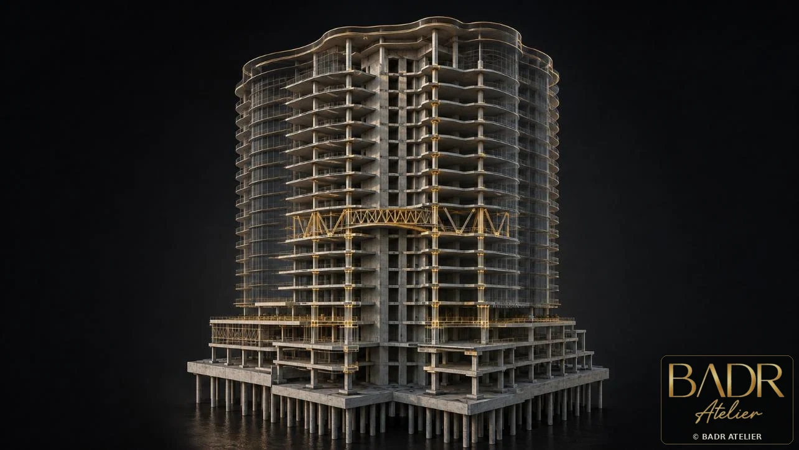
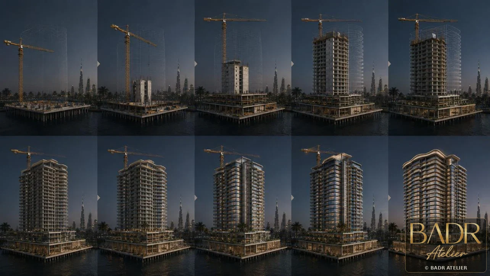

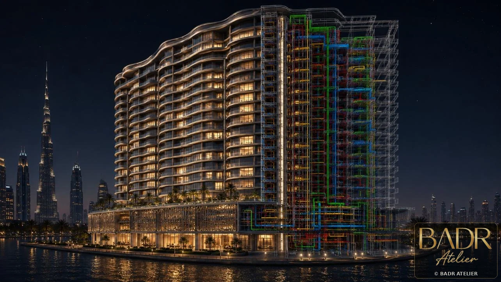
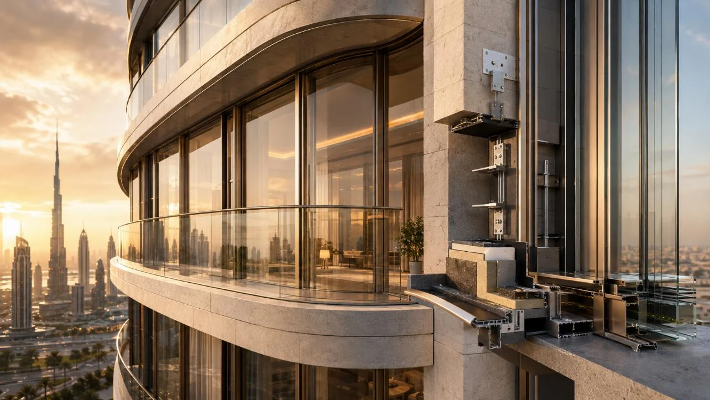
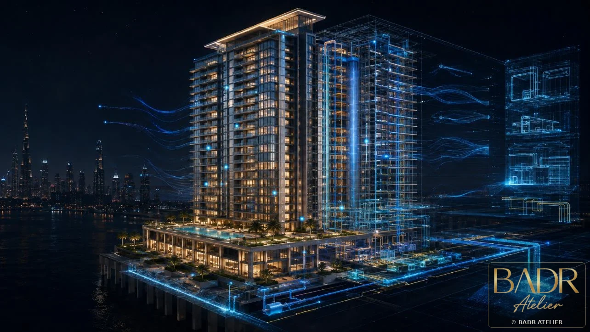
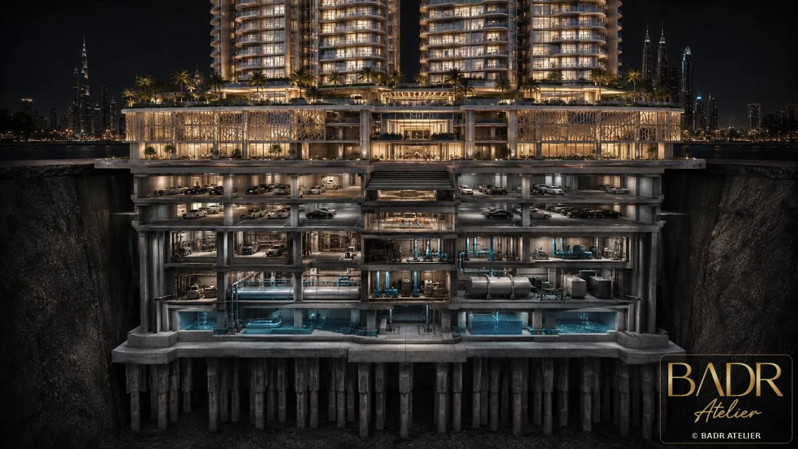
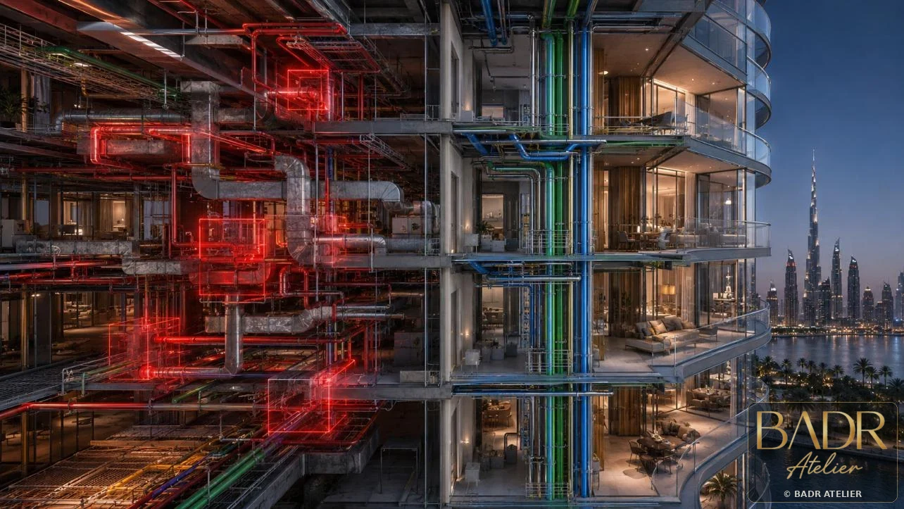
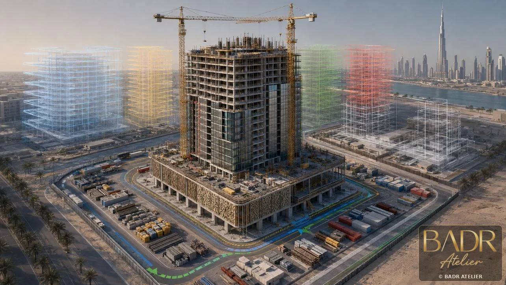


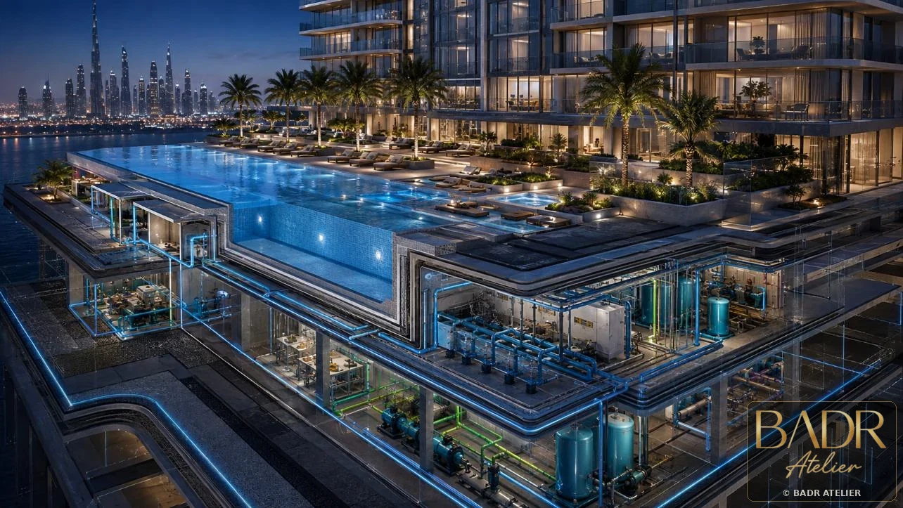
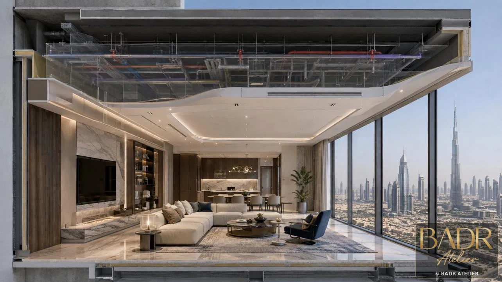
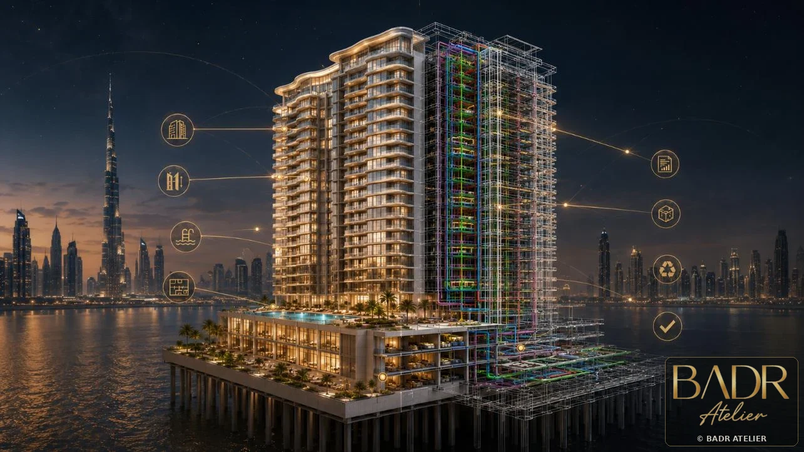